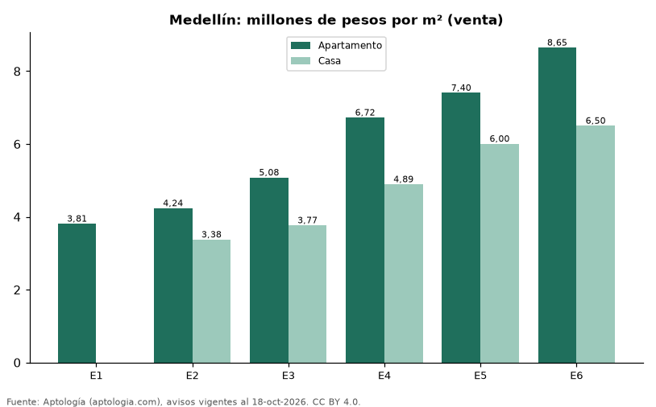

Precio del m² en Medellín por estrato: apartamentos frente a casas (venta, octubre 2026)
Estudio con datos abiertos (CC BY 4.0). Versión original: https://www.aptologia.com/estudios/precio-m2-por-estrato-apartamentos-y-casas-venta-medellin-2026 · DOI: 10.5281/zenodo.23518933
En Medellín, el m² de un apartamento en venta va de 3,81 millones de pesos en estrato 1 a 8,65 millones de pesos en estrato 6. En estrato 4, el m² de una casa es 27,2 % más barato que el de un apartamento.
Resumen: analizamos 25.421 apartamentos y casas en venta en Medellín con estrato y área declarados.
Actualizado: 18 de octubre de 2026 (datos del 18 de octubre de 2026) · Próxima actualización: mensual.

Resumen
| Indicador | Valor |
|---|---|
| Apto, estrato 1 | 3,81 millones de pesos |
| Apto, estrato 6 | 8,65 millones de pesos |
| Casa vs. apto (estrato 4) | -27,2 % |
| Avisos | 25.421 |
Precio por m² por estrato y tipo de vivienda (venta)
| Estrato | Apartamentos por m² | Casas por m² | Casa vs. apartamento | Avisos (apto / casa) |
|---|---|---|---|---|
| 1 | 3,81 millones de pesos | — | — | 40 / — |
| 2 | 4,24 millones de pesos | 3,38 millones de pesos | -20,3 % | 188 / 211 |
| 3 | 5,08 millones de pesos | 3,77 millones de pesos | -25,9 % | 1.665 / 995 |
| 4 | 6,72 millones de pesos | 4,89 millones de pesos | -27,2 % | 3.589 / 1.053 |
| 5 | 7,40 millones de pesos | 6,00 millones de pesos | -18,9 % | 5.813 / 1.512 |
| 6 | 8,65 millones de pesos | 6,50 millones de pesos | -24,8 % | 8.337 / 2.002 |
Medianas del precio pedido por m²; — indica menos de 30 avisos.
Preguntas frecuentes
¿Es más barato el m² de una casa que el de un apartamento en Medellín? estrato 2: casa -20,3 %; estrato 3: casa -25,9 %; estrato 4: casa -27,2 %; estrato 5: casa -18,9 %; estrato 6: casa -24,8 % (medianas por m², octubre de 2026).
¿Cuánto vale el m² en estrato 6 en Medellín? 8,65 millones de pesos para apartamentos.
Metodología
- Fuente: exportes nocturnos de la base de datos de Aptología (aptologia.com) del 18 de octubre de 2026: avisos vigentes de vivienda en portales inmobiliarios de 13 países, recogidos por Aptología y vistos en línea entre el 11 y el 18 de octubre de 2026. Corte: 18 de octubre de 2026.
- Depuración: se eliminan duplicados exactos (misma ciudad, zona, tipo, precio, moneda, área, habitaciones y baños) y los precios fuera del percentil 1–99 de cada país, operación, moneda y tipo; el precio por m² usa solo avisos con área declarada entre 12 y 2.000 m² y también se recorta al P1–P99.
- Qué se mide: precios pedidos (publicados), no precios de cierre. En arriendo, el canon mensual sin administración, gastos comunes ni condominio.
- Muestra mínima: cada cifra publicada se apoya en al menos 30 avisos; las celdas con menos se omiten.
- Colombia: Precios en pesos colombianos, sin conversión de moneda.
- Cordura: solo se publica si el m² mediano de los apartamentos no baja al subir el estrato.
- Limitaciones: la cobertura depende de los portales que recorre Aptología en cada país y es mayor en las ciudades grandes y en los segmentos medio-alto y alto; el área es la que declara el aviso, sin verificar; los nombres de zona vienen de los portales.
- Privacidad: solo se publican agregados; no se publica ningún dato personal, enlace a avisos ni nombre de anunciante.
- Datos abiertos: datos.csv, licencia CC BY 4.0.
Cómo citar
Pinzón Pineda, D. M. (2026). Precio del m² en Medellín por estrato: apartamentos frente a casas (venta, octubre 2026). Aptología (aptologia.com). https://github.com/elbroker/aptologia-datos/tree/main/estudios/precio-m2-por-estrato-apartamentos-y-casas-venta-medellin-2026. Datos: datos.csv, licencia CC BY 4.0.